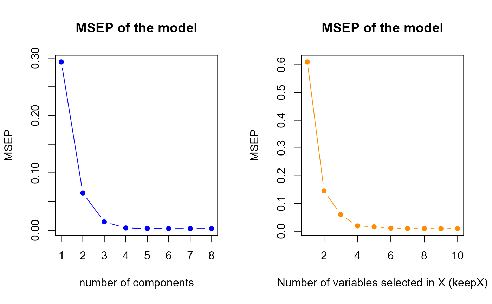

Tuning of the parameters for sPLS models
tuning.sPLS.XY.RdThis function calculate the best number of components and the best number of variables to select for sPLS models.
Arguments
- X
The centered and standardized original predictor matrix.
- Y
The centered and standardized original response vector or matrix.
- validation
Character. What kind of (internal) validation to use, matching one of "Mfold" or "loo". Default is "Mfold".
- folds
The folds in the Mfold cross-validation.
- ncomp
The number of components
- progressBar
By default set to
TRUEto output the progress bar of the computation.
Details
This function outputs the best tuning parameters by using MSEP criterion. There is also two MSEP plots : the one shows the MSEP according to the number of components and the other shows the MSEP according to the number of selected variables in X and Y. Particularly, in multivariate sPLS (q>1), the "plot" is a table of MSEP values ; the best (minimum) value of MSEP is then colored in red.
Value
- MSEP.h
Vector of MSEP values according to the number of components
- h.best
Index of the minimum value of
MSEP.h- MSEP.q.p
Matrix of MSEP values according the number of X selected variables (by column) and the number of Y selected variables (by row)
- keepX.best
A vector of the best number of X selected variables repeated
h.besttimes- keepY.best
A vector of the best number of Y selected variables repeated
h.besttimes
Examples
library(sgPLSdevelop)
# number of components
ncomp.max <- 8
# dataset
data <- data.create(p = 10, list = TRUE)
# model
X <- data$X
Y <- data$Y
# tuning
perf.res <- tuning.sPLS.XY(X,Y,ncomp = ncomp.max)
